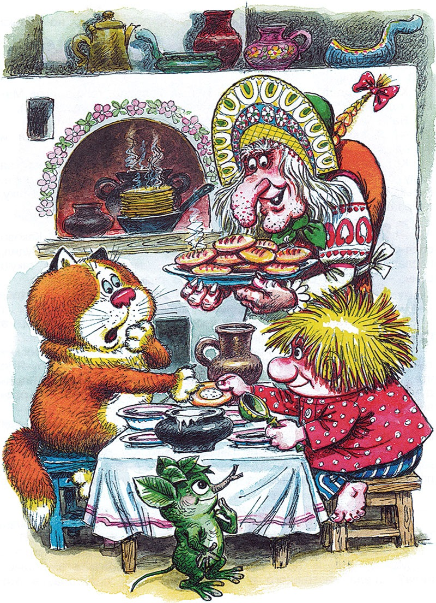

Домовёнок Кузя - продолжение -10.
Татьяна Александрова
23. Бабёныш-Ягёныш
В ту зиму Лешику и деду Диадоху снились неспокойные сны. Старый леший всю зиму видел во сне топор. А его внуку снились серые избушки на курьих ножках, гонявшиеся за ним по всему лесу. Одна все-таки сцапала его огромными птичьими лапами и сказала: «А не пора ли вставать?»
Лешик поскорее вылез из короба. Дед Диадох еще крепко спал.
Была ранняя весна. Остатки снега белели на черной земле. Лешонок выбрался из берлоги, отряхнулся от приставших к нему в коробе сухих листьев — и бегом к другу.
«Ох, цел ли, жив ли? Этакий маленький породистый домовеночек, ему б расти-цвести!» — думал Лешик, мчавшийся по весенним ручьям и лужам, мокрый, как лягушонок.
Пряничный дом сиял на поляне, как весенний цветок. Лешик скорее заглянул в окно и глазам своим не поверил, ни левому, ни правому. В кровати, укрытый всеми одеялами, на всех перинах и подушках спал Кузька. В ногах у него дремал Кот. А у кровати, на полу, — половиком укрывшись, Кузькины лапти под головой — храпела Яга.

Лешик сел на крыльцо. Солнце глядело на него теплым взором. Лешонок обсох. Его зеленая шкурка снова стала пушистой. А он все сидел и думал. Может, все-таки и у домовых бывает зимняя спячка? Но, услышав голоса в доме, заглянул в дверь. Кузька сидел за столом и распоряжался:
— Не так, Баба Яга, и не эдак! Я что сказал? Хочу пирогов с творогом! А ты ватрушек напекла. У пирога творог где? Внутри. А у ватрушек? Сверху. Ешь теперь сама!
— Дитятко милое! Пирогов-то я с морковкой тебе напекла. А ватрушечки румяненькие, душистенькие, сами в рот просятся.
— В твой рот просятся, ты и ешь, — грубо отвечал Кузька. — Одно дитятко, и того накормить толком не можешь. Эх ты, Баба Яга — костяная нога!
— Чадушко мое бриллиантовое! Покушай, сделай милость! — уговаривала Яга, поливая медом гору ватрушек. — Горяченькие, свеженькие, с пылу с жару.
— Не хочу и не буду! — пробурчал Кузька. — Вот помру у тебя с голоду, тогда узнаешь.
— Ой-ой, голубчик мой золотенький! Прости меня, глупую бабу, не угодила! Может, петушка хочешь леденцового, на палочке?
— Петушка хочу! — смилостивился Кузька. Баба Яга побежала из избы и так торопилась, что не заметила Лешика, прищемила его дверью и полезла на крышу снимать леденцового петуха (он был вместо флюгера). Лешик пискнул, угодив промеж косяка и двери, но Кузька не заметил друга. А с крыши слышалось:
— Иду-иду, мой золотенький! Несу-несу тебе петушка, мой цыпленочек!
Кузька сидел напротив Кота и был гораздо толще его. Макал оладушки в сметану, запивал киселем, заедал кулебякой.
— Я сварю-напеку такого-эдакого, чего никто не видал и не едал. А видели бы, иззавидовались.
Кот ел пышки с начинкой. Они с Кузькой ухватились за одну особенно пышную пышку, молча потянули каждый к себе. Кузька хотел стукнуть Кота, но увидел Лешика, бросил пышку, заерзал на лавке:
— Садись, гостем будешь.
— Здравствуй, здравствуй, изумрудик мой зелененький! Каково спал-почивал? Что так рано встал? Дедуленька небось разбудил, послал внука к старой бабуленьке. Не ждали мы тебя в такую рань, — пропела Баба Яга, внимательно разглядывая лешонка.
— Дедушка еще спит. Я сам прибежал, — рассеянно ответил лешонок, узнавая и не узнавая друга.
Кузька стал похож на гриб-дождевик, «волчий табак», а ручки-ножки как у жука. Лешик говорит, а Кузька позевывает или — хлюп-хлюп — тянет чай из блюдца. Вдруг он оживился, поругал Бабу Ягу: что, мол, за безобразие, неужто ничего повкуснее нельзя придумать, смотреть на еду противно. Проворчал и на Кота: разлегся, такой-сякой, чуть не пол-лавки занял. Потом Кузька задремал и храпел во сне совсем как Баба Яга.
Проснулся, на друга и не глядит. Только Кот глянул на лешонка и зевнул, широко раскрыв розовый рот. А Кузька валяется на полу посредине избы, машет руками-ногами и привередничает:
— Не хочу! Не буду!

Баба Яга бегает вокруг, уговаривает:
— Кушай, поправляйся! Этого попробуй, пока не остыло. Того отведай, пока не растаяло.
Уложила домовенка в люльку, баюкает. Кузька сосет тюрю. Может, это и не Кузька вовсе?
Может, Яга его подменила? Съела настоящего в другом доме или спрятала, а это какой-нибудь Бабеныш-Ягеныш балуется. И думать не думает, и говорить ему лень, и слушать. А ну-ка, слыхал ли он что-нибудь про Афоньку, Адоньку, Вуколочку? Заговорил про них Лешик, и оживился Кузька, голову из люльки высунул.
— Это еще что за Афоньки-Адоньки? — вмешалась Баба Яга — Небось слаще морковки ничего не ели, ни ума у них, ни разума. Не нужны они нам, чучела такие-сякие!
— Хи-хи-хи! Чучелы! — пропищал Кузька, и Лешику стало страшно.
— А где ж волшебный сундучок, Кузенькина радость? — пропела Баба Яга, покачивая люльку. — Или вы с дедом Диадохом забрали себе чужое имущество? Я уж и то подумала: слетаю, мол, сама принесу. Нельзя грабить деточек, нельзя!
Кузька в люльке с тюрей во рту промямлил:
— Отдавай мой сундук сей же час, чучело зеленое! Ты — вор, и твой дед — разбойник! — И Кузька заснул.
Тюря упала на пол. Яга кинула ее в печь, в огонь, поглядела на Лешика:
— Сам сбегаешь за сундучком или мне, старой, свои косточки тревожить?
24. Сундучок
Маленький лесовичок печально поплелся в берлогу. Хорошо бы, дедушка Диадох проснулся.
По дороге Лешик попрощался с последним снегом, поздоровался с первой травой, с Кузькиным любимым пнем, с Красной сосной. Дед Диадох спит, как и спал. Лешие чем старше, тем медленнее пробуждаются от зимней спячки, и, пока не придет пора, буди не буди, не проснутся.
Из-под вороха сухих листьев Лешик достал Кузькин сундучок, он заблестел в темноте не хуже, чем гнилушка или светляк. А когда вынес его из берлоги, то на сундучке так и засверкали прекрасные цветы и звезды. Лешик нес его и любовался. «Как же это Кузя хочет отдать такую красоту нечувственнице, ненавистнице?» — думал Лешик, осторожно обходя лужи по пути к Бабе Яге.
— Охо-хо-хо! — вздохнул он у Мутной речки.
«Охо-хо-о-о-о!» — отозвалось эхо, да так громко, угрожающе, будто не лешонок охнул, а медведь взревел или матерый волк завыл.

Лешик испуганно вскрикнул, и опять будто стая взбесившихся волков завыла в чаще, филины проснулись в дуплах, заухали, зарыдали.
Это было Злое эхо. Даже дед Диадох не знал, где оно живет, боялся его встретить. Только могучий Леший, отец лешонка, мог бы прогнать или утихомирить Злое эхо, но он сейчас далеко, в Обгорелом лесу. Наверное, Злое эхо неизвестно откуда позвала Баба Яга, чтоб не убежал бедный Кузенька. Лешик ступил на мост. Доски брякнули, колокольцы звякнули. Громом и гулом отозвалось Злое эхо и пошло перекатываться, грохотать, греметь и выть.
На крыльцо пряничного дома выскочила Баба Яга:
— Изумрудик мой пожаловал, сундучок принес! Вижу-вижу. Давай его сюда! Поглядим-посмотрим, что за чудо невиданное, что в нем такого особенного, в этом сундуке. Дом у меня — полная чаша, а все чего-то не хватает. Уж и то придумаю, и это, а все чего-то нету.
Хотела взять сундучок. Но Лешик проскочил в дом, из рук в руки передал сундук хозяину. Кузька даже не обрадовался. Глядит тупо, будто полено держит или чурку. Толстый Кот и то внимательнее посмотрел. Баба Яга выхватила у Кузьки сундук. А домовенок и бровью не повел.
Разглядывает Яга сундучок, вертит так и эдак:
— Вот мы и у праздничка! Пусть теперь нам все завидуют. У нас волшебный сундук! Станут просить-молить, не всякому покажем, а тому, кто ниже всех поклонится, да и то подумаем.
Видит Лешик: поблек сундук в руках у Бабы Яги. Так, невесть что, невзрачная деревяшка. Яга теребит замок, колупает уголки:
— Слыхать о нем слыхала. В глаза первый раз вижу. Говорят, он радость приносит. Нам радость, другим — горе. У нас прибавилось, у других убавилось. А какая от него радость, чадушко мое сахарное?
Кузька в ответ только зевнул. Баба Яга трясет сундук возле уха, разглядывает, нюхает даже:
— Чего с ним делать, дружочек мой любезный? Кому знать, как не тебе. Давно слыхала, что хранится он в маленькой деревеньке у небольшой речки, в твоей избе. Сама видела, бежал ты как угорелый, а сундук, будто огонь, сверкает. И не так далеко та деревенька: вверх по Мутной речке, потом по Быстрой речке, полдня пути… Может, ты обманул меня, изумрудик зеленый, — наклонилась Яга к Лешику, — простую деревяшку подсунул?
Так вот откуда прибежал Кузька! Вот куда его надо поскорее вернуть с сундучком вместе! А Кузька то ли дремлет, то ли спит, то ли так сидит.
— Какая от него радость, скажи своей бабушке! Вот чадушко неблагодарное! Кормишь, поишь и словечка не дождешься!
Билась Баба Яга, упрашивала. Молчит Кузька.
— И чего нахваливали и домовые, и русалки, у всех этот сундук с языка не шел, — ворчит Баба Яга. — Вон у меня сундуки богатые — полны добром, златом-серебром. А этот? Думали, ждали от него радости. Где она? А нет радости, есть горе. Это что же? Сундук нам горе принес? Не надо нам здесь, в этом доме, ни горя, ни беды.
Схватила нож, открывает сундук — нож сломался. Стукнула сундук кочергой — кочерга погнулась. Ударила ухватом — ухват переломился. Рассердилась, хвать сундуком об стол — столешница пополам, сундук целехонек. Как треснет по нему костяным кулаком, у самой искры из глаз, а сундук невредим.
— Нам не владеть, так не владей никто! — Размахнулась и швырнула сундук в печь. — Не мне, так никому!
Но в печи сразу огонь погас, угли потухли, зола остыла. Сундучок опять целехонек.
Ахнула Яга, схватила сундучок и к двери:
— В этой печи не сгорел, в том доме вспыхнешь!

Кузька хвать Ягу за сарафан, расписную кайму оторвал:
— Отдавай мой сундук, Баба Яга — костяная нога! Не умеешь с ним обращаться — и не трогай!
— А ты умеешь с ним обращаться, дитятко мое сладенькое? — Баба Яга оставила сундучок у печи, кинулась к домовенку. — Ежели твой дед Папила в огонь за ним кинулся, значит, и впрямь в этом сундуке какая-то радость. Что за радость, скажи?
Кузька опять молчит.
— Ну, — кричит Баба Яга, — унесу вас всех в ту избу! И с сундуком вместе! Там у меня заговорите! — Хватает домовенка, а он тяжелый, не поднять, руками отпихивается, ногами отбрыкивается.
— Тебе надо, — кричит Кузька, — ты и ступай куда хочешь! Там грязно, от пыли не продохнешь.
— А ежели вымету, вычищу, пойдешь со мной, деточка? — спрашивает Яга сладким голосом. — Это уже другой дом будет, чистенький, добренький.
— Пойду, — отвечает Кузька. — Лети, что ли, скорее. Мне тут надоело.
Баба Яга верхом на метлу — и была такова. Только Злое эхо вслед прогудело: «У-у-у-у!»
Продолжение следует